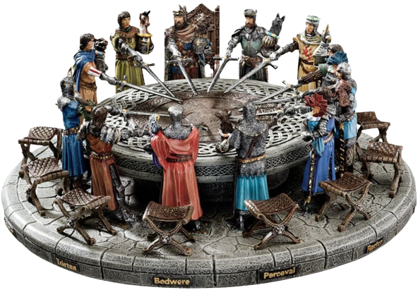

Bienvenido a nuestro sitio sobre los Wesen más peligrosos. Explora el oscuro y misterioso mundo de estas criaturas.
El Consejo Wesen es una antigua institución que fue creada en la edad media para controlar a los wesen más violentos que atacaban los pueblos de kehrseiter (humanos normales), razón por la cual luego todos los wesen eran perseguidos en venganza por las matanzas. El Consejo tiene entre otras atribuciones: detectar a los wesen peligrosos y "eliminarlos", castigar a los wesen que se muestran públicamente sin razón alguna, y en general hacer cumplir las normas del Consejo, que tienen como intención principal conservar la paz entre wesen y kehrseiter. El Consejo Wesen tiene su sede en La Haya, junto a la Corte Internacional de Justicia.
Somos apasionados por estudiar y entender los Wesen. Nuestra misión es proporcionar información detallada sobre estas criaturas para que estés preparado para cualquier encuentro inesperado.
